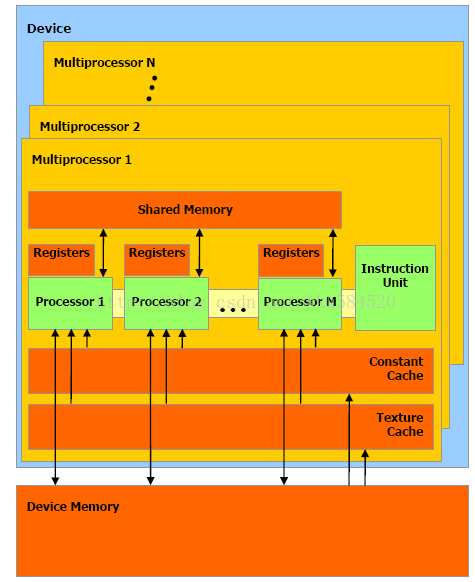
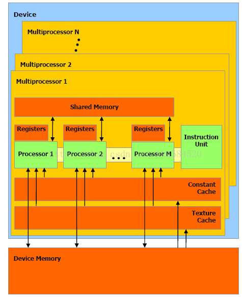

CUDA并行编程学习笔记
技术名词
- SIMD： 单指令多数据，是基于一个处理器核的，128位
- MMX：多媒体拓展
- AVX 高级适量拓展， 256位
计算机架构
冯诺依曼计算机架构
- 内存受限型
- QPI (quick path interconnect) 快速通道互联
连接机
采用4096个16核的CPU组装到一台机器上，也就是说64K个处理器来完成一个任务。连接机采用SIMD型并行处理，但是处理器之间的同步和通讯是很大的问题
Cell处理器(众核)
用一个常规处理器作为监管处理器(PowerPC)，该处理器与大量高速流处理(SPE)相连。 * 每个流处理单元SPE调用执行一个程序
通过共享的网络，SPE之间和SPE与PowerPC之间进行相互通讯

多点计算
集群，当前最流行的莫过于Hadoop和spark了，一个是分布式文件系统，一个是分布式计算框架，这两个工具使得多点计算的方法充分发挥。
GPU架构

 

CUDA编程基础知识
学习CUDA C，可以在异构计算平台中实现高性能的应用。CUD的编译原则--基于虚拟指令集的运行时编译。
计算能力—高性能硬件与技术
GPU在高性能计算和深度学习加速中扮演着非常重要的角色， GPU的强大的并行计算能力，大大提升了运算性能。随着运算数据量的不断攀升，GPU间需要大量的交换数据，GPU通信性能成为了非常重要的指标。NVIDIA推出的GPUDirect就是一组提升GPU通信性能的技术。但GPUDirect受限于PCI Expresss总线协议以及拓扑结构的一些限制，无法做到更高的带宽，为了解决这个问题，NVIDIA提出了NVLink总线协议。
GPUDirect P2P
GPUDirect Peer-to-Peer(P2P) 技术主要用于单机GPU间的高速通信，它使得GPU可以通过PCI Express直接访问目标GPU的显存，避免了通过拷贝到CPU host memory作为中转，大大降低了数据交换的延迟。 以深度学习应用为例，主流的开源深度学习框架如TensorFlow、MXNet都提供了对GPUDirect P2P的支持，NVIDIA开发的NCCL(NVIDIA Collective Communications Library)也提供了针对GPUDirect P2P的特别优化。 通过使用GPUDirect P2P技术可以大大提升深度学习应用单机多卡的扩展性，使得深度学习框架可以获得接近线性的训练性能加速比
NVLink 拓扑结构图
首先我们简单看下NVIDIA对NVLink的介绍：NVLink能在多GPU之间和GPU与CPU之间实现非凡的连接带宽。带宽有多大?2016发布的P100是搭载NVLink的第一款产品，单个GPU具有160GB/s的带宽，相当于PCIe Gen3 * 16带宽的5倍。去年GTC 2017上发布的V100搭载的NVLink 2.0更是将GPU带宽提升到了300G/s，差不多是PCIe的10倍了。

RDMA原理介绍
前面介绍的GPUDirect P2P和NVLink技术可以大大提升GPU服务器单机的GPU通信性能，当前深度学习模型越来越复杂，计算数据量暴增，对于大规模深度学习训练任务，单机已经无法满足计算要求，多机多卡的分布式训练成为了必要的需求，这个时候多机间的通信成为了分布式训练性能的重要指标。
 如上图所示，传统的TCP/IP协议，应用程序需要要经过多层复杂的协议栈解析，才能获取到网卡中的数据包，而使用RDMA协议，应用程序可以直接旁路内核获取到网卡中的数据包。RDMA可以简单理解为利用相关的硬件和网络技术，服务器1的网卡可以直接读写服务器2的内存，最终达到高带宽、低延迟和低资源利用率的效果。
如上图所示，传统的TCP/IP协议，应用程序需要要经过多层复杂的协议栈解析，才能获取到网卡中的数据包，而使用RDMA协议，应用程序可以直接旁路内核获取到网卡中的数据包。RDMA可以简单理解为利用相关的硬件和网络技术，服务器1的网卡可以直接读写服务器2的内存，最终达到高带宽、低延迟和低资源利用率的效果。
 所谓GPUDirect
RDMA，就是计算机1的GPU可以直接访问计算机2的GPU内存。而在没有这项技术之前，GPU需要先将数据从GPU内存搬移到系统内存，然后再利用RDMA传输到计算机2，计算机2的GPU还要做一次数据从系统内存到GPU内存的搬移动作。GPUDirect
RDMA技术使得进一步减少了GPU通信的数据复制次数，通信延迟进一步降低。
所谓GPUDirect
RDMA，就是计算机1的GPU可以直接访问计算机2的GPU内存。而在没有这项技术之前，GPU需要先将数据从GPU内存搬移到系统内存，然后再利用RDMA传输到计算机2，计算机2的GPU还要做一次数据从系统内存到GPU内存的搬移动作。GPUDirect
RDMA技术使得进一步减少了GPU通信的数据复制次数，通信延迟进一步降低。
CUDA的基础入门
函数的类型
__host__ float HostFunc()
默认情况下，被host函数调用在CPU上执行
__devide__ float DeviceFunc() 被GPU设备执行调用
__global__ void Kernelfunc()
被host函数调用，在设备上执行
Note：
* __global__函数返回值必须为void
* 在设备上执行的函数不能是递归，函数参数是固定的，不能再函数内部使用static变量变量类型
__shared__ A[4]；//在share memory，块内线程共享。
设备上的函数，声明的变量都是存在register上的，存不下的放到local memory；
cudaMalloc()的空间是在设备的global memory上的。
CUDA几个头文件
1 |
CUDA routine
cudaError_t err = cudaSuccess;cudaError_t类型，表示错误类型。cudaSuccess表示成功。一般cuda routine的返回值都是cudaError_t类型，表示函数是否执行成功。printf("%s\n", cudaGetErrorString(cudaGetLastError()));输出错误时，使用以上函数转化为string。err = cudaMalloc((void **)&d_A, size);动态内存申请函数，在设备的global memory上申请size个字节空间。err = cudaMemcpy(d_A, h_A, size, cudaMemcpyHostToDevice);orerr = cudaMemcpy(h_A, d_A, size, cudaMemcpyDeviceToHost);//内存拷贝函数：从cpu上的内存h_A上拷贝size个字节数据到gpu上的内存d_A。反之，一样。int threadsPerBlock = 256;int blocksPerGrid =(nElements + threadsPerBlock - 1) / threadsPerBlock; vectorAdd<<<blocksPerGrid, threadsPerBlock>>>(d_A, d_B, d_C, nElements);//前2句，表示Grid，block都是1维时，设置网格内的块数，每块内的线程数。 //最后一句，启动kernel（运行在gpu端的函数）函数。 //注意前2句可以改成。dim3 threadsPerBlock(256);这种形式。err = cudaGetLastError();//启动kernel函数时，并没有返回值，通过这个调用这个函数，查看kernel函数是否启动成功。err = cudaFree(d_A);//释放使用cudaMalloc申请的空间。err = cudaMemset(d_a, 0, size)//类似于memset函数。将d_A的size个字节置0.
1 | /** |
常见问题
NVCC没有配置，导致undefined reference HEADER DIR没有配置，导致找不到头文件